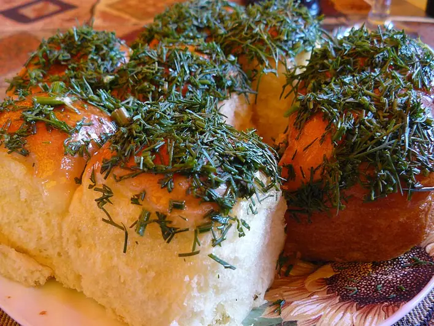

Фото: MOs810, CC BY-SA 3.0

Пампушки с чесноком
Мягкие дрожжевые булочки, политые чесночным маслом с укропом, к борщу
120 мин8 порц.347 ккал на порциюБ 8 · Ж 13 · У 48Украинская кухня
Продукты на 8 порц.
- Мука пшеничная3 стак.
- Молоко250 мл
- Дрожжи сухие1 пакетик
- Сахар1 ст. л.
- Соль1 ч. л.
- Растительное масло6 ст. л.
- Яйцо куриное1 желток
- Чеснок5 зуб.
- Вода2 ст. л.
- Укроп0,5 пучка
Как готовить
- Растворите дрожжи и сахар в тёплом молоке, оставьте на 10 минут. Добавьте соль, 2 ст. л. масла и муку, замесите мягкое тесто, 7 минут.
- Накройте и оставьте в тепле на 1 час, пока тесто не увеличится вдвое.
- Разделите тесто на 16 частей, скатайте гладкие шарики и плотно уложите в смазанную маслом форму. Дайте подойти 20 минут.
- Смажьте желтком и выпекайте при 180 °C (средний жар) 25-30 минут, до золотистого цвета.
- Пока пампушки пекутся, разотрите чеснок с щепоткой соли, смешайте с оставшимся маслом, тёплой водой и рубленым укропом.
- Полейте горячие пампушки чесночной заправкой и накройте полотенцем на 10 минут, чтобы они впитали аромат.
Совет. Пампушки подают к борщу тёплыми. Если тесто прилипает к рукам при формовке, смажьте ладони маслом, а не подсыпайте муку.